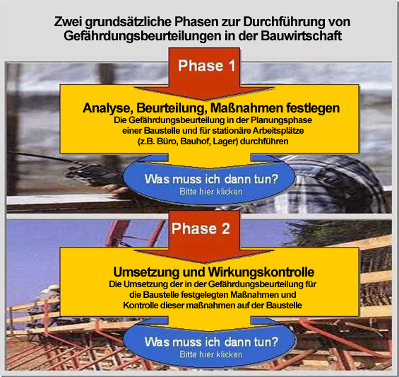

Kurzerklärung zum Erstellen der Gefährdungsbeurteilung
- Gefährdungsbeurteilung in der Planungsphase ausfüllen
- Baustelle oder Betriebsbereich festlegen
- Eine Leistung/Tätigkeit auswählen
- Teilleistungen/-Tätigkeiten festlegen, die für Sie relevant sind
-
Gefährdungsbeurteilung bearbeiten (Infos) / Maßnahmen durchführen
- Maßnahmen umsetzen
- Wirkungskontrolle der Maßnahmen auf der Baustelle anhand der Gefährungsbeurteilungen
